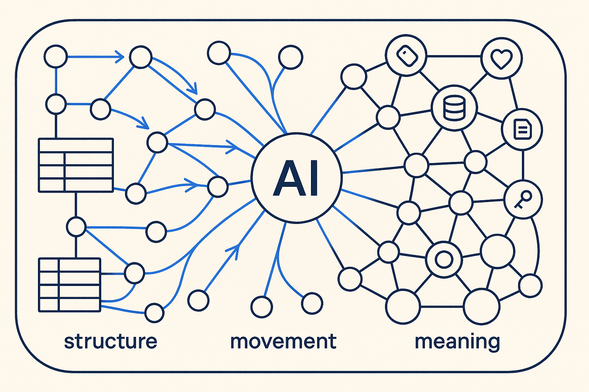

The field is stuck between two worlds that never quite fit: modeling structure and modeling movement. AI raised the stakes — and made the split impossible to ignore. Breakthrough Modeling unites structure, movement, meaning and AI-readability in one model — at the real scale and pace the enterprise actually has.

Two worlds that never quite fit — structure and movement — and why AI made the split impossible to ignore. Then: why modeling came back and how the process itself got stuck.
What changes when the two are modelled together. Including the fair question: is this old wine in new bottles? and what BTM actually is.
The model behind the method — and why it is more than a data model, requiring a new attitude rather than only a new notation.
The named ideas, and — separately — the key activities: what the method actually does, as opposed to what it calls things.
The wake-up call. Now, not later — see workshops and news.